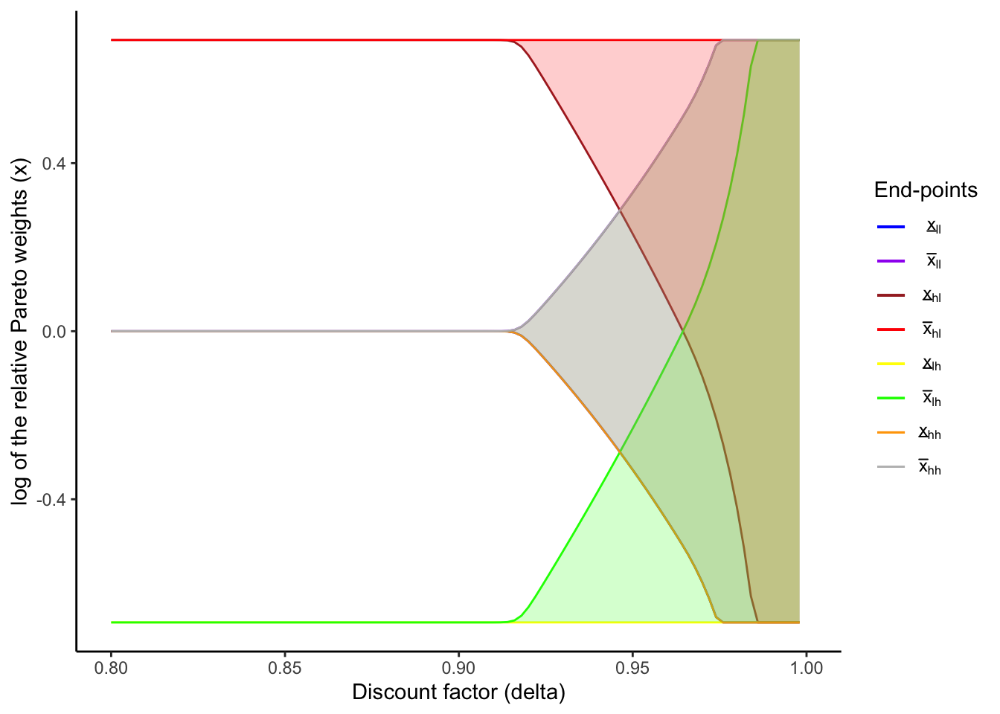
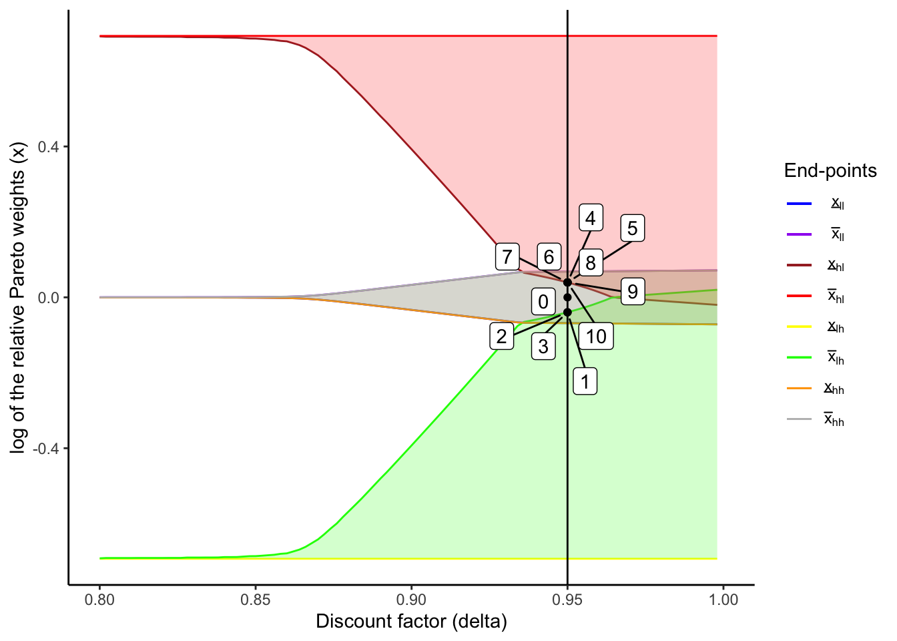
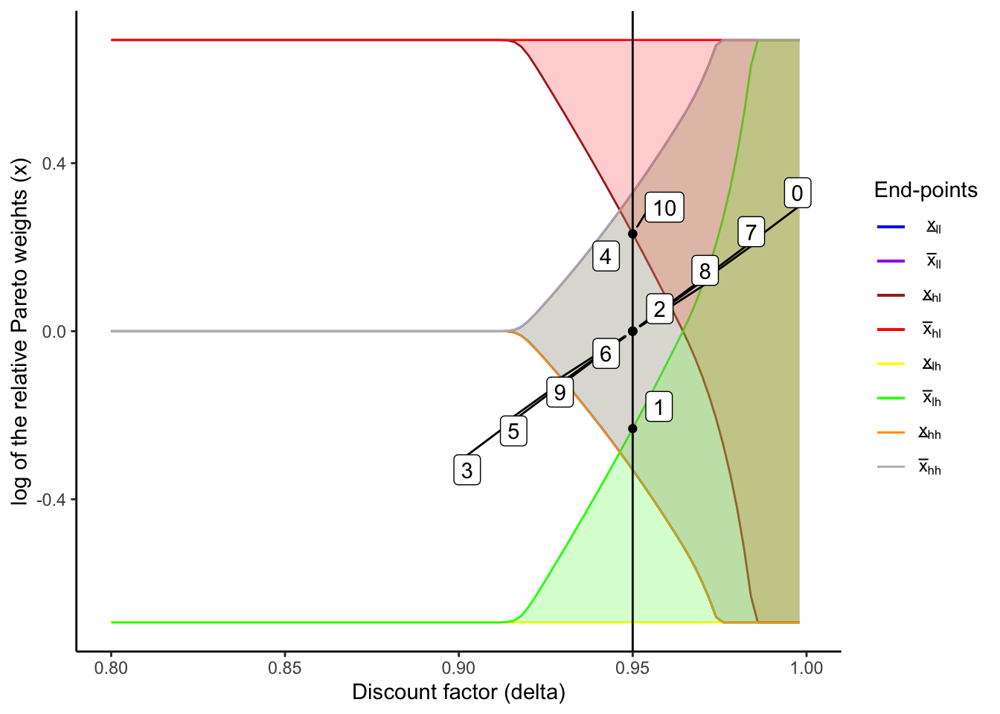

pacman::p_load(
tidyverse,
kableExtra,
ggrepel,
latex2exp
)4 Interlude: Risk-sharing with static limited commitment
As opposed to the limited commitment model where the transfers depend on the past history, Coate and Ravallion (1993) consider a repeated game for a limited commitment model, where transfers are determined by the current state. Whereas the former is called a dynamic limited commitment model, the latter is called a static limited commitment model.
A static limited commitment model follows a similar update rule of relative Pareto weights, with one difference that, when participation constraints are not binding, the current relative Pareto weight becomes the initial relative Pareto weight. For more discussion, see Ligon, Thomas, and Worrall (2002).
Using this update rule, the static limited commitment model can be numerically solved.
The exact procedure is as follows (note that, since the relative Pareto weight does not depend on the past history, the state variable of the value function is just an income state, s):
- In h’th iteration, calculate the values as if the participation constraints are not binding: \tilde{V}_i^h(s) = u(c_i(s, x_0)) + \delta \sum_{s'} Pr(s' | s) V_i^{h - 1}(s'), where c_i(s, x_0) is determined as \frac{u'(c_2(s, x_0))}{u'(c_1(s, x_0))} = x_0. Here, the subscripts 1 and 2 are used to indicate a household and the village, respectively.
- If \tilde{V}_1^h(s) \ge U_1^{aut}(s) and \tilde{V}_2^h(s) \ge U_2^{aut}(s), it means that no participation constraint is binding. Therefore, I update the values as V_i^h(s) = \tilde{V}_i^h(s).
- If \tilde{V}_1^h(s) < U_1^{aut}(s), then the household’s participation constraint is binding, and hence V_1^h(s) = U_1^{aut}(s). This means that u(c_1(s, \underline{x})) + \delta \sum_{s'} Pr(s' | s) V_1^{h - 1}(s') = U_1^{aut}(s) \Rightarrow c_1(s, \underline{x}) = u^{-1} \left(U_1^{aut}(s) - \delta \sum_{s'} Pr(s' | s) V_1^{h - 1}(s') \right), and thus, V_2^h(s) = u \left(y(s) - u^{-1} \left(U_1^{aut}(s) - \delta \sum_{s'} Pr(s' | s) V_1^{h - 1}(s') \right) \right) + \delta \sum_{s'} Pr(s' | s) V_2^{h - 1}(s'). Here, y(s) is the aggregate income at s.
- If \tilde{V}_2^h(s) < U_2^{aut}(s), similarly, I let V_2^h(s) = U_2^{aut}(s) and V_1^h(s) = u \left(y(s) - u^{-1} \left(U_2^{aut}(s) - \delta \sum_{s'} Pr(s' | s) V_2^{h - 1}(s') \right) \right) + \delta \sum_{s'} Pr(s' | s) V_1^{h - 1}(s').
Repeat this until V_1(s) and V_2(s) converge. Afterwards, derive \underline{x}(s) and \overline{x}(s) from c_1(s, \underline{x}) = u^{-1} \left(U_1^{aut}(s) - \delta \sum_{s'} Pr(s' | s) V_1(s') \right) and c_1(s, \underline{x}) = y(s) - u^{-1} \left(U_2^{aut}(s) - \delta \sum_{s'} Pr(s' | s) V_2(s') \right) When u is a CRRA utility function, c_1(s, x) = \frac{y}{1 + x^{- \sigma}} and u^{-1}(u) = \left(u (1 - \sigma) \right)^{1 / (1 - \sigma)}. With this, I get \underline{x}(s) = \left( \frac{y(s)}{\left( \left(U_1^{aut}(s) - \delta \sum_{s'} Pr(s' | s) V_1(s') \right) (1 - \sigma) \right)^{1 / (1 - \sigma)}} \right)^{- \frac{1}{\sigma}} and \overline{x}(s) = \left( \frac{y(s)}{ y(s) - \left(\left(U_2^{aut}(s) - \delta \sum_{s'} Pr(s' | s) V_2(s') \right) (1 - \sigma) \right)^{1 / (1 - \sigma)}} \right)^{- \frac{1}{\sigma}}.
4.1 Code for creating a diagram for a static limited commitment model
4.1.1 Load data and functions
load('IntermediateData/lc_hom_model_functions.RData')relativeParetoWeightBoundsArrayLTW <- readRDS(
file.path('IntermediateData/relativeParetoWeightBoundsArrayLTW.rds')
)
createLCFigure <- readRDS(
file.path('IntermediateData/createLCFigure.rds')
)
LCFigure <- readRDS(
file.path('IntermediateData/LCFigure.rds')
)calculateInverseUtility <- function(util, sigma) {
if (sigma == 1) {
return(exp(util))
} else {
return((util * (1 - sigma))^(1 / (1 - sigma)))
}
}
calculateDiffStaticLCRiskSharingAndAutarky <- function(
relativeParetoWeight,
delta,
sigma,
aggregateIncome,
householdValueLCRiskSharing,
villageValueLCRiskSharing,
incomeTransitionProbVec,
householdAutarkyValue,
villageAutarkyValue,
numHouseholds
) {
householdConsumption <- calculateHouseholdConsumption(
aggregateIncome,
relativeParetoWeight,
numHouseholds,
sigma
)
householdDiffLCRiskSharingAndAutarky <- (
calculateUtility(householdConsumption, sigma)
+ delta * incomeTransitionProbVec %*% householdValueLCRiskSharing
- householdAutarkyValue
) %>% as.numeric
villageDiffLCRiskSharingAndAutarky <- (
calculateUtility((aggregateIncome - householdConsumption) / (numHouseholds - 1), sigma)
+ delta * incomeTransitionProbVec %*% villageValueLCRiskSharing
- villageAutarkyValue
) %>% as.numeric
return(list(
householdDiffLCRiskSharingAndAutarky = householdDiffLCRiskSharingAndAutarky,
villageDiffLCRiskSharingAndAutarky = villageDiffLCRiskSharingAndAutarky
))
}calculateValueStaticLCRiskSharing <- function(
valueFullRiskSharing,
consumptionOnRelativeParetoWeightGrid,
aggregateIncomeGridPoints,
incomeTransitionMatrix,
autarkyValueMatrix,
relativeParetoWeightsGridPoints,
numRelativeParetoWeights,
delta,
sigma,
numIncomeStates,
numHouseholds,
iterationLimit,
diffLimit,
initialRelativeParetoweight
) {
# Initial guess is expected utilities under full risk sharing
householdValueLCRiskSharing <- valueFullRiskSharing$householdValueFullRiskSharing[
, which.min(abs(initialRelativeParetoweight - relativeParetoWeightsGridPoints))
]
villageValueLCRiskSharing <- valueFullRiskSharing$villageValueFullRiskSharing[
, which.min(abs(initialRelativeParetoweight - relativeParetoWeightsGridPoints))
]
householdConsumptionAtInitialRelativeParetoWeight <- calculateHouseholdConsumption(
aggregateIncomeGridPoints,
initialRelativeParetoweight,
numHouseholds,
sigma
)
diff <- 1
iteration <- 1
while ((diff > diffLimit) && (iteration <= iterationLimit)) {
# First, ignore enforceability and just update the value functions
# using the values at the previous iteration
householdValueLCRiskSharingNew <- (
calculateUtility(householdConsumptionAtInitialRelativeParetoWeight, sigma)
+ delta * incomeTransitionMatrix %*% householdValueLCRiskSharing
)
villageValueLCRiskSharingNew <- (
calculateUtility(
(aggregateIncomeGridPoints - householdConsumptionAtInitialRelativeParetoWeight)
/ (numHouseholds - 1),
sigma
)
+ delta * incomeTransitionMatrix %*% villageValueLCRiskSharing
)
# Now check enforceability at each state
for (incomeStateIndex in seq(1, numIncomeStates)) {
aggregateIncome <- aggregateIncomeGridPoints[incomeStateIndex]
incomeTransitionProbVec <- incomeTransitionMatrix[incomeStateIndex,]
householdAutarkyValue <- autarkyValueMatrix[incomeStateIndex, 1]
villageAutarkyValue <- autarkyValueMatrix[incomeStateIndex, 2]
if (householdValueLCRiskSharingNew[incomeStateIndex] < householdAutarkyValue) {
householdValueLCRiskSharingNew[incomeStateIndex] <- householdAutarkyValue
villageValueLCRiskSharingNew[incomeStateIndex] <- (
calculateUtility(
aggregateIncome - calculateInverseUtility(
householdAutarkyValue
- delta * incomeTransitionProbVec %*% householdValueLCRiskSharing,
sigma
),
sigma
)
+ delta * incomeTransitionProbVec %*% villageValueLCRiskSharing
)
}
if (villageValueLCRiskSharingNew[incomeStateIndex] < villageAutarkyValue) {
villageValueLCRiskSharingNew[incomeStateIndex] <- villageAutarkyValue
householdValueLCRiskSharingNew[incomeStateIndex] <- (
calculateUtility(
aggregateIncome - calculateInverseUtility(
villageAutarkyValue
- delta * incomeTransitionProbVec %*% villageValueLCRiskSharing,
sigma
),
sigma
)
+ delta * incomeTransitionProbVec %*% householdValueLCRiskSharing
)
}
}
diff <- max(
max(abs(householdValueLCRiskSharingNew - householdValueLCRiskSharing)),
max(abs(villageValueLCRiskSharingNew - villageValueLCRiskSharing))
)
householdValueLCRiskSharing <- householdValueLCRiskSharingNew
villageValueLCRiskSharing <- villageValueLCRiskSharingNew
iteration <- iteration + 1
}
relativeParetoWeightBounds <- matrix(NA, nrow = numIncomeStates, ncol = 2)
for (incomeStateIndex in seq(1, numIncomeStates)) {
aggregateIncome <- aggregateIncomeGridPoints[incomeStateIndex]
incomeTransitionProbVec <- incomeTransitionMatrix[incomeStateIndex,]
householdAutarkyValue <- autarkyValueMatrix[incomeStateIndex, 1]
villageAutarkyValue <- autarkyValueMatrix[incomeStateIndex, 2]
relativeParetoWeightBounds[incomeStateIndex, 1] <- (
aggregateIncome /
calculateInverseUtility(
householdAutarkyValue
- delta * incomeTransitionProbVec %*% householdValueLCRiskSharing,
sigma
)
- 1
)^(- 1 / sigma) %>% pmax(min(relativeParetoWeightsGridPoints))
relativeParetoWeightBounds[incomeStateIndex, 2] <- (
aggregateIncome / (
aggregateIncome
- calculateInverseUtility(
villageAutarkyValue
- delta * incomeTransitionProbVec %*% villageValueLCRiskSharing,
sigma
)
)
- 1
)^(- 1 / sigma) %>% pmin(max(relativeParetoWeightsGridPoints))
}
if (iteration == iterationLimit) {
print("Reached the maximum limit of iterations!")
}
return(list(
householdValueLCRiskSharing = householdValueLCRiskSharing,
villageValueLCRiskSharing = villageValueLCRiskSharing,
relativeParetoWeightBounds = relativeParetoWeightBounds))
}solveStaticLCRiskSharing <- function(
delta,
sigma,
punishment,
householdIncomeTransitionMatrix,
householdIncomeGridPoints,
villageIncomeTransitionMatrix,
villageIncomeGridPoints,
numIncomeStates,
numHouseholds,
initialRelativeParetoWeight,
numRelativeParetoWeights = 2000,
iterationLimit = 100,
diffLimit = 1e-8
) {
incomeTransitionMatrix <- kronecker(
villageIncomeTransitionMatrix,
householdIncomeTransitionMatrix
)
incomeGridPointsMatrix <- as.matrix(expand.grid(
householdIncomeGridPoints, villageIncomeGridPoints
))
aggregateIncomeGridPoints <- (
incomeGridPointsMatrix[, 1] + incomeGridPointsMatrix[, 2] * (numHouseholds - 1)
)
autarkyValueMatrix <- expand.grid(
calculateAutarkyValue(
householdIncomeGridPoints,
sigma,
delta,
punishment,
householdIncomeTransitionMatrix
),
calculateAutarkyValue(
villageIncomeGridPoints,
sigma,
delta,
punishment,
villageIncomeTransitionMatrix
)
)
relativeParetoWeightsGridPoints <- getRelativeParetoWeightsGridPoints(
sigma,
punishment,
householdIncomeGridPoints,
villageIncomeGridPoints,
numRelativeParetoWeights
)
consumptionOnRelativeParetoWeightGrid <- matrix(
NA, nrow = numIncomeStates, ncol = numRelativeParetoWeights
)
for (incomeStateIndex in seq_along(aggregateIncomeGridPoints)) {
for (relativeParetoWeightIndex in seq_along(relativeParetoWeightsGridPoints)) {
consumptionOnRelativeParetoWeightGrid[
incomeStateIndex,
relativeParetoWeightIndex
] <- calculateHouseholdConsumption(
aggregateIncomeGridPoints[incomeStateIndex],
relativeParetoWeightsGridPoints[relativeParetoWeightIndex],
numHouseholds,
sigma
)
}
}
valueFullRiskSharing <- calculateValueFullRiskSharing(
incomeTransitionMatrix,
aggregateIncomeGridPoints,
delta,
sigma,
autarkyValueMatrix,
consumptionOnRelativeParetoWeightGrid,
numRelativeParetoWeights,
numHouseholds
)
valueStaticLCRiskSharing <- calculateValueStaticLCRiskSharing(
valueFullRiskSharing,
consumptionOnRelativeParetoWeightGrid,
aggregateIncomeGridPoints,
incomeTransitionMatrix,
autarkyValueMatrix,
relativeParetoWeightsGridPoints,
numRelativeParetoWeights,
delta,
sigma,
numIncomeStates,
numHouseholds,
iterationLimit,
diffLimit,
initialRelativeParetoWeight
)
return(valueStaticLCRiskSharing)
}4.1.2 Create a figure of relative Pareto weight bounds
sigmaLTW <- 1.0
punishmentLTW <- 0.0
incomeTransitionMatrixLTW <- matrix(rep(c(0.1, 0.9), 2), nrow = 2, byrow = TRUE)
incomeGridPointsLTW <- c(2/3, 4/3)
numIncomeStatesLTW <- length(incomeGridPointsLTW) * length(incomeGridPointsLTW)
numHouseholdsLTW <- 2
superIncomeTransitionMatrixLTW <- kronecker(
incomeTransitionMatrixLTW,
incomeTransitionMatrixLTW
)
incomeGridPointsMatrixLTW <- as.matrix(expand.grid(
incomeGridPointsLTW, incomeGridPointsLTW
))
aggregateIncomeGridPointsLTW <- (
incomeGridPointsMatrixLTW[, 1] + incomeGridPointsMatrixLTW[, 2] * (numHouseholdsLTW - 1)
)
deltaVec <- seq(0.8, 0.999, by = 0.002)
initialRelativeParetoWeight <- 1relativeParetoWeightBoundsArrayLTWStatic = array(
NA,
dim = c(numIncomeStatesLTW, 2, length(deltaVec))
)
for (deltaIndex in seq_along(deltaVec)) {
relativeParetoWeightBoundsArrayLTWStatic[,,deltaIndex] <- (
staticLCRiskSharingResultLTW[[deltaIndex]]$relativeParetoWeightBounds
)
}staticLCFigure <- createLCFigure(
deltaVec,
incomeGridPointsLTW,
relativeParetoWeightBoundsArrayLTWStatic
)
staticLCFigure
4.2 Comparison with a dynamic limited commitment model
Here, I compare the consumption volatility under static vs dynamic limited commitment. For illustartion, I generate 10 random incomes and explore how households transfer and consume in each period.
numIncomeSimulations <- 10
set.seed(35)
# Sequence of income shocks
incomeRealization <- c(1, 2, 3, 4)
incomeRealizationLabel <- c("Low, Low", "High, Low", "Low, High", "High, High")
incomeSeq <- sample(
incomeRealization,
size = numIncomeSimulations,
replace = TRUE,
prob = superIncomeTransitionMatrixLTW[1,]
)
householdIncomeRealization <- incomeGridPointsMatrixLTW[incomeSeq, 1]
villageIncomeRealization <- incomeGridPointsMatrixLTW[incomeSeq, 2]
(incomeRealizationVec <- incomeRealizationLabel[incomeSeq]) [1] "Low, High" "High, High" "High, High" "High, Low" "High, High"
[6] "High, High" "High, High" "High, High" "Low, Low" "High, Low" createPlotTable <- function(
delta,
sigma,
LCFigure,
relativeParetoWeightBoundsMatrix,
numIncomeSimulations,
incomeSeq,
incomeGridPointsMatrix,
aggregateIncomeGridPoints,
numHouseholds,
incomeRealizationVec,
householdIncomeRealization,
villageIncomeRealization,
dynamic = TRUE
) {
# Vector of relative Pareto weights
relativeParetoWeightVec <- rep(NA, numIncomeSimulations + 1)
relativeParetoWeightVec[1] <- 1
# Relative Pareto weights on the history of income realizations
if (dynamic == TRUE) {
for (timeIndex in seq(numIncomeSimulations)) {
relativeParetoWeightBounds <- relativeParetoWeightBoundsMatrix[incomeSeq[timeIndex],]
if (relativeParetoWeightVec[timeIndex] < relativeParetoWeightBounds[1]) {
relativeParetoWeightVec[timeIndex + 1] <- relativeParetoWeightBounds[1]
} else if (relativeParetoWeightVec[timeIndex] > relativeParetoWeightBounds[2]) {
relativeParetoWeightVec[timeIndex + 1] <- relativeParetoWeightBounds[2]
} else {
relativeParetoWeightVec[timeIndex + 1] <- relativeParetoWeightVec[timeIndex]
}
}
} else {
for (timeIndex in seq(numIncomeSimulations)) {
relativeParetoWeightBounds <- relativeParetoWeightBoundsMatrix[incomeSeq[timeIndex],]
if (relativeParetoWeightVec[1] < relativeParetoWeightBounds[1]) {
relativeParetoWeightVec[timeIndex + 1] <- relativeParetoWeightBounds[1]
} else if (relativeParetoWeightVec[1] > relativeParetoWeightBounds[2]) {
relativeParetoWeightVec[timeIndex + 1] <- relativeParetoWeightBounds[2]
} else {
relativeParetoWeightVec[timeIndex + 1] <- relativeParetoWeightVec[1]
}
}
}
# Consumption and transfers, calculated based on x_vec
householdConsVec <- rep(NA, numIncomeSimulations + 1)
villageConsVec <- rep(NA, numIncomeSimulations + 1)
transferFromHHtoVilVec <- rep(NA, numIncomeSimulations + 1)
for (timeIndex in seq(2, numIncomeSimulations + 1)) {
householdConsVec[timeIndex] <- calculateHouseholdConsumption(
aggregateIncomeGridPoints[incomeSeq[timeIndex - 1]],
relativeParetoWeightVec[timeIndex],
numHouseholds,
sigma
)
villageConsVec[timeIndex] <- (
aggregateIncomeGridPoints[incomeSeq[timeIndex - 1]] - householdConsVec[timeIndex]
)
transferFromHHtoVilVec[timeIndex] <- (
incomeGridPointsMatrix[incomeSeq[timeIndex - 1], 1] - householdConsVec[timeIndex]
)
}
# Output table
tableOutput <- tibble(
`Period` = seq(0, numIncomeSimulations),
`ln(x)` = log(relativeParetoWeightVec),
`Income shocks` = c(NA, incomeRealizationVec),
`Net transfer (1 -> 2)` = transferFromHHtoVilVec,
`Consumption (1)` = householdConsVec,
`Consumption (2)` = villageConsVec,
`Income (1)` = c(NA, householdIncomeRealization),
`Income (2)` = c(NA, villageIncomeRealization)
)
# Output figure
plotOutput <- LCFigure +
geom_vline(xintercept = delta) +
geom_point(aes(rep(delta, numIncomeSimulations + 1), log(relativeParetoWeightVec))) +
geom_label_repel(
aes(
rep(delta, numIncomeSimulations + 1),
log(relativeParetoWeightVec)),
label = seq(0, numIncomeSimulations),
box.padding = 0.35, point.padding = 0.5,
max.overlaps = Inf
)
# Table of mean and SD of consumption and income
summaryTableOutput <- tableOutput %>%
select(
c(
"Consumption (1)",
"Consumption (2)",
"Income (1)",
"Income (2)"
)
) %>%
summarise_all(
list(
mean = function(x) mean(x, na.rm = TRUE),
sd = function(x) sd(x, na.rm = TRUE)
)
) %>%
pivot_longer(everything(), names_to = "variable", values_to = "value") %>%
extract(variable, c("variable", "stat"),
regex = "(.*)(_mean|_sd)") %>%
pivot_wider(names_from = "stat", values_from = "value")
colnames(summaryTableOutput) <- c("var", "Mean", "SD")
return(list(tableOutput, plotOutput, summaryTableOutput))
}I use \delta = 0.95 since both static and dynamic limited commitment models achieve partial risk sharing with this time discount factor.
deltaIndex <- 76
dynamicLCResults <- createPlotTable(
deltaVec[deltaIndex],
sigmaLTW,
LCFigure,
relativeParetoWeightBoundsArrayLTW[, , deltaIndex],
numIncomeSimulations,
incomeSeq,
incomeGridPointsMatrixLTW,
aggregateIncomeGridPointsLTW,
numHouseholdsLTW,
incomeRealizationVec,
householdIncomeRealization,
villageIncomeRealization,
dynamic = TRUE
)
staticLCResults <- createPlotTable(
deltaVec[deltaIndex],
sigmaLTW,
staticLCFigure,
relativeParetoWeightBoundsArrayLTWStatic[, , deltaIndex],
numIncomeSimulations,
incomeSeq,
incomeGridPointsMatrixLTW,
aggregateIncomeGridPointsLTW,
numHouseholdsLTW,
incomeRealizationVec,
householdIncomeRealization,
villageIncomeRealization,
dynamic = FALSE
) 4.2.1 Results with dynamic limited commitment
From the figure and table below, we can see that the consumption and transfers depend on the past history. For instance, in periods 2 and 5, although the “High, High” income state is realized in both periods, transfers are from HH1 to HH2 in the period 2 and from HH2 to HH1 in the period 5. This is because, in period 1, HH1 experiences a negative shock, and hence it “pays back” to HH2 in the following period. The opposite happend in periods 4 and 5. This represents the “state-contingent loans” as in Udry (1994) or the “quasi-credit” as in Fafchamps (1999).
Also, in the period 4, HH2 experiences a bad shock and HH1’s participation constraint binds. At this point, they “forget” the past history: in other words, transfers and consumption do not depend on the past history any more. This is the “amnesia” property as in Kocherlakota (1996).
dynamicLCResults[[2]]
tableDynamic <- dynamicLCResults[[1]]
tableDynamic %>%
kbl(digits = 3) %>%
kable_classic()| Period | ln(x) | Income shocks | Net transfer (1 -> 2) | Consumption (1) | Consumption (2) | Income (1) | Income (2) |
|---|---|---|---|---|---|---|---|
| 0 | 0.00 | NA | NA | NA | NA | NA | NA |
| 1 | -0.04 | Low, High | -0.314 | 0.980 | 1.020 | 0.667 | 1.333 |
| 2 | -0.04 | High, High | 0.026 | 1.307 | 1.360 | 1.333 | 1.333 |
| 3 | -0.04 | High, High | 0.026 | 1.307 | 1.360 | 1.333 | 1.333 |
| 4 | 0.04 | High, Low | 0.314 | 1.020 | 0.980 | 1.333 | 0.667 |
| 5 | 0.04 | High, High | -0.026 | 1.360 | 1.307 | 1.333 | 1.333 |
| 6 | 0.04 | High, High | -0.026 | 1.360 | 1.307 | 1.333 | 1.333 |
| 7 | 0.04 | High, High | -0.026 | 1.360 | 1.307 | 1.333 | 1.333 |
| 8 | 0.04 | High, High | -0.026 | 1.360 | 1.307 | 1.333 | 1.333 |
| 9 | 0.04 | Low, Low | -0.013 | 0.680 | 0.653 | 0.667 | 0.667 |
| 10 | 0.04 | High, Low | 0.314 | 1.020 | 0.980 | 1.333 | 0.667 |
4.2.2 Results with dynamic limited commitment
In the static model, unlike in the model with a dynamic limited commitment, transfers and consumption do not depend on the past history, as shown in the figure and table below.
staticLCResults[[2]]
tableStatic <- staticLCResults[[1]]
tableStatic %>%
kbl(digits = 3) %>%
kable_classic()| Period | ln(x) | Income shocks | Net transfer (1 -> 2) | Consumption (1) | Consumption (2) | Income (1) | Income (2) |
|---|---|---|---|---|---|---|---|
| 0 | 0.000 | NA | NA | NA | NA | NA | NA |
| 1 | -0.232 | Low, High | -0.218 | 0.885 | 1.115 | 0.667 | 1.333 |
| 2 | 0.000 | High, High | 0.000 | 1.333 | 1.333 | 1.333 | 1.333 |
| 3 | 0.000 | High, High | 0.000 | 1.333 | 1.333 | 1.333 | 1.333 |
| 4 | 0.232 | High, Low | 0.218 | 1.115 | 0.885 | 1.333 | 0.667 |
| 5 | 0.000 | High, High | 0.000 | 1.333 | 1.333 | 1.333 | 1.333 |
| 6 | 0.000 | High, High | 0.000 | 1.333 | 1.333 | 1.333 | 1.333 |
| 7 | 0.000 | High, High | 0.000 | 1.333 | 1.333 | 1.333 | 1.333 |
| 8 | 0.000 | High, High | 0.000 | 1.333 | 1.333 | 1.333 | 1.333 |
| 9 | 0.000 | Low, Low | 0.000 | 0.667 | 0.667 | 0.667 | 0.667 |
| 10 | 0.232 | High, Low | 0.218 | 1.115 | 0.885 | 1.333 | 0.667 |
4.2.3 Consumption volatility in the two models
The table below shows the income and consumption summary statistics. Since the income streams are identical in the two simulations, the statistics of the income are the same. In the dynamic limited commitment (DLC) model, the consumption volatility is smaller than that in the static limited commitment model (SLC). This demonstrates that, with dynamic limited commitment, households are better secured from income risks.
tableCompare <- left_join(dynamicLCResults[[3]], staticLCResults[[3]], by = "var")
colnames(tableCompare) <- c("", "Mean (DLC)", "SD (DLC)", "Mean (SLC)", "SD (SLC)")
rownames(tableCompare) <- c(
"Consumption (HH 1)",
"Consumption (HH 2)",
"Income (HH 1)",
"Income (HH 2)"
)Warning: Setting row names on a tibble is deprecated.tableCompare %>%
kbl(digits = 3) %>%
kable_classic()| Mean (DLC) | SD (DLC) | Mean (SLC) | SD (SLC) | |
|---|---|---|---|---|
| Consumption (1) | 1.175 | 0.236 | 1.178 | 0.236 |
| Consumption (2) | 1.158 | 0.237 | 1.155 | 0.253 |
| Income (1) | 1.200 | 0.281 | 1.200 | 0.281 |
| Income (2) | 1.133 | 0.322 | 1.133 | 0.322 |
Coate, Stephen, and Martin Ravallion. 1993. “Reciprocity Without Commitment: Characterization and Performance of Informal Insurance Arrangements.” Journal of Development Economics 40 (1): 1–24.
Fafchamps, Marcel. 1999. “Risk sharing and quasi-credit.” The Journal of International Trade & Economic Development 8 (3): 257–78. https://doi.org/10.1080/09638199900000016.
Kocherlakota, N. R. 1996. “Implications of Efficient Risk Sharing without Commitment.” The Review of Economic Studies 63 (4): 595–609. https://doi.org/10.2307/2297795.
Ligon, Ethan, Jonathan P. Thomas, and Tim Worrall. 2002. “Informal Insurance Arrangements with Limited Commitment: Theory and Evidence from Village Economies.” Review of Economic Studies 69 (1): 209–44. https://doi.org/10.1111/1467-937X.00204.
Udry, Christopher. 1994. “Risk and Insurance in a Rural Credit Market: An Empirical Investigation in North Nigeria.” Review of Economic Studies 61 (3): 495–526.